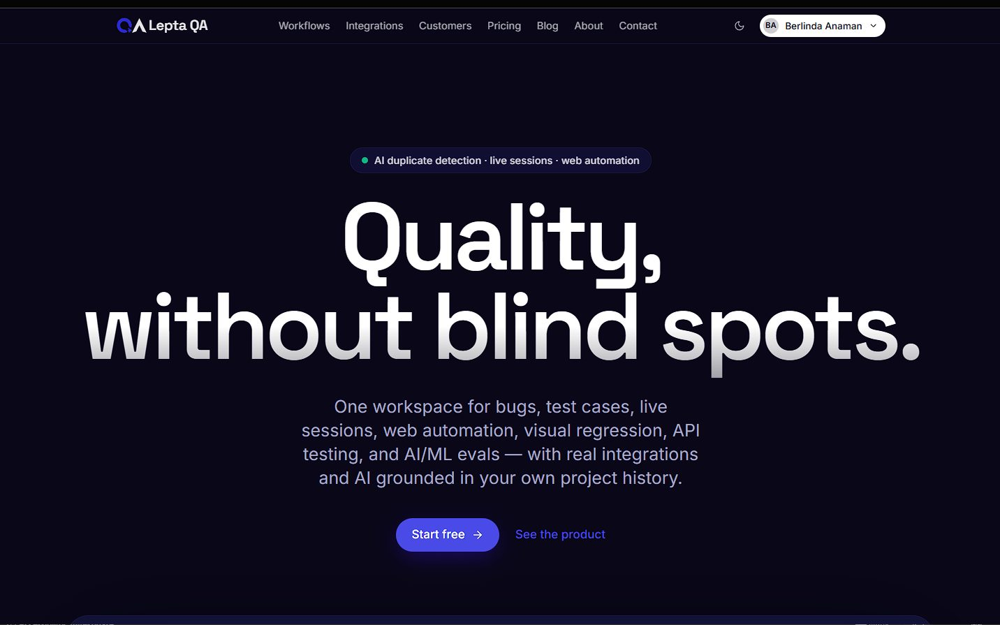

Making a powerful QA platform simple enough to adopt
Lepta QA puts bugs, test cases, live test sessions, automation, API and security testing in one workspace. I've been its freelance product manager since July 2026, focused on making it simple to use, giving it a clear plan and getting it in front of the right teams.
- Role
- Product manager (freelance)
- Company
- Lepta
- Team
- 3 people, including the CEO
- Stage
- Live, early go-to-market
- Timeline
- Jul 2026 to present
- Product
- qa.lepta.app ↗

01The problem
QA work breaks down when it lives in five places. Test cases sit in one tool, bugs in another, exploratory sessions in chat and automation results somewhere else. Duplicates pile up, and nobody is sure a release is ready.
Lepta QA answers that with a lot of features. At first, too many. The full set was overwhelming and hard to find your way through, and there was no documentation of what the product should do or for whom.
Who it's for
- QA leads who plan coverage and approve releases
- Testers running manual and live sessions
- Developers who need clear, reproducible bugs
- Product and support teams reporting customer issues
- Stakeholders and auditors who review release evidence
02Discovery
I started with the CEO's vision and kept asking what the product is ultimately for. The answer that tied everything together: a release decision you can trace back to its evidence. Every feature should feed that.
Then I tested every area end to end as a new user would, and shared what got in the way: screens that tried to do too much, features a first-time team doesn't need on day one, and flows that needed fewer steps. Those insights became the brief for simplifying the product.
I also use Lepta QA for real work. The HYRO and Medirevs teams run their testing in it, so I see where real teams struggle, not just where I do.
03Decisions and trade-offs
Sequence the features into releases
DecisionThe MVP is the core loop: workspaces, projects, bugs, test cases, live sessions, releases, docs, roles and search. Automation, API, visual and security testing follow in Release 1, integrations and AI assistance in Release 2, and enterprise controls in Release 3.
Trade-offSome built features wait for their release, in exchange for a first experience a new team can follow.
AI suggests, people decide
DecisionAI flags likely duplicate bugs and drafts test cases, but never closes, merges, approves or changes severity on its own.
Trade-offSlower than automatic merging, but no report is ever lost or silently changed.
Price by team size
DecisionI redefined the tiers around seats and projects, from a free single-user plan to Enterprise.
Trade-offSimple to choose from, with usage limits on automation that let an active run finish before asking for an upgrade.
Security scans need proof of ownership
DecisionScans only run against targets the team can prove it controls, within safe limits.
Trade-offA little more setup, but the product can't be pointed at someone else's system.
| Plan | Team | Annual price |
|---|---|---|
| Free | 1 member | $0 |
| Starter | 4 members, 10 projects | $495.90 |
| Pro | 12 members, 50 projects | $1,430.40 |
| Business | 100 members, unlimited projects | $4,790.40 |
| Enterprise | Custom | Custom |
04Execution
Understand
Worked through the CEO's vision and the ultimate goal behind each feature.
Document
Wrote the PRD and user stories, with requirement IDs and acceptance criteria that test cases map to.
Test and simplify
Tested end to end and fed back changes that make each flow simpler.
Go to market
Redefined pricing, wrote the marketing strategy and started launch advertising.
What I did
- Documented the product requirements and user stories that now guide all testing
- Set the release plan: MVP, then Releases 1 to 3
- Test the product end to end and turn findings into simplification changes
- Redefined the pricing tiers and wrote the marketing strategy
- Manage the developer's priorities and delivery
- Brought the HYRO and Medirevs teams onto Lepta QA for their testing
What the team did
- The CEO sets the vision
- The developer builds and ships the product
05Outcomes
Success measures I set
- Under 3 minutes from sign-up to a team's first bug
- At least 98% of automated runs end with a clear result
- At least 99% of integration events delivered on time
- Zero data crossing between workspaces
Where it stands: Live and in early go-to-market. The focus now is testing with real teams and the first advertising campaigns.
06What I learned
- A broad product needs one clear promise. "Quality, without blind spots" does more work than a feature list.
- Using the product on real work is the fastest test. Running HYRO and Medirevs testing in it shows problems no demo would.
- In B2B tools, the buyer and the daily user are often different people. The message has to reach both.